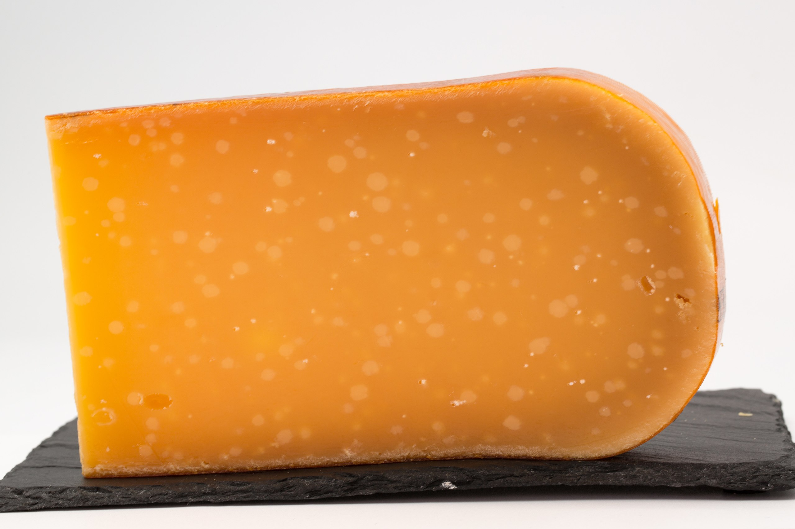
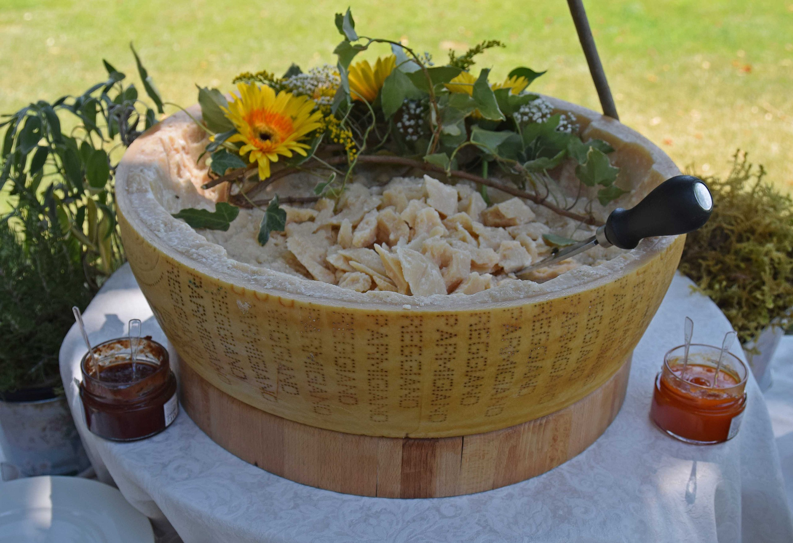

Camembert
Camembert is a moist, soft, creamy, surface-ripened cow's milk cheese. It was first made in the late 18th century in Camembert, Normandy, in northwest France. It is sometimes compared in look and taste to brie cheese, albeit with a slightly lower butterfat content than brie's typical 60% and 75% by weight.

Feta
Feta is a Greek brined white cheese made from sheep's milk or from a mixture of sheep and goat's milk. It is soft, with small or no holes, a compact touch, few cuts, and no skin. Crumbly with a slightly grainy texture, it is formed into large blocks and aged in brine. Its flavor is tangy and salty, ranging from mild to sharp.

Manchego
Manchego is a cheese made in the La Mancha region of Spain from the milk of sheep of the Manchega breed. It is aged between 60 days and 2 years. Manchego has a firm and compact consistency and a buttery texture, often containing small, unevenly distributed air pockets. The colour of the cheese varies from white to ivory-yellow, and the inedible rind from yellow to brownish-beige.

Gouda
Gouda is a sweet, creamy, yellow cow's milk cheese originating from the Netherlands. It is one of the most popular cheeses worldwide. The name is used today as a general term for numerous similar cheeses produced in the traditional Dutch manner
Parmigiano
Parmesan/Parmigiano Reggiano is an Italian hard, granular cheese produced from cows’ milk and aged at least 12 months. Parmigiano Reggiano It is named after two of the areas which produce it, the provinces of Parma and Reggio Emilia (Parmigiano is the Italian adjective for Parma and Reggiano that for Reggio Emilia). In addition to Reggio Emilia and Parma, it is also produced in the part of Bologna west of the River Reno and in Modena (all of the above being located in the Emilia-Romagna region), as well as in the part of Mantua (Lombardy) which is on the south bank of the River Po.
